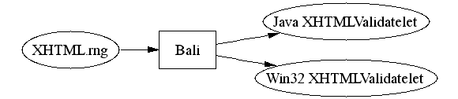

Bali - RELAX NG Validatelet Compiler
Bali is a "RELAX NG validator compiler" that reads a RELAX NG schema and produces a validator that can validate documents with the given schema.
For example, Bali can read a XHTML schema at the compile time, and it produces XHTMLValidatelet.java, which is a Java source code. Then you compile this file along with your other source code, and at the runtime this class can be used to validate XHTML documents before you process it.

Advantages
Compared to general-purpose validators, such as MSV and Jing, this approach has the following benefits:
-
Bali can produce a validator in various programming languages, which makes it easy to use RELAX NG in those platforms that don't have general purpose RELAX NG validator implementations.
-
Generated validator is usually small compared to a general-purpose RELAX NG validator, both in terms of the runtime memory consumption and the code size.
-
Generated validator (is expected to) run faster than general-purpose validators.
Downloads
Bali (Ver.2002/09/30) including binaries, soure code, and documentations. To run the compiler, you need to have JDK1.2 or later installed on your system.
Documents
-
Using Java Validatelet
-
This document explains how to generate a Java validatelet and use it in your application.
-
Using Win32 Validatelet
-
This document explains how to generate a Win32 validatelet and use it along with MSXML4 in your application.
-
Using Bali as a general purpose validator
-
Instead of producing a validatelet, Bali can be also used just as an ordinary validator. Or it can be even used from your Java application as a general-purpose validator. This document explains how.
-
Compiling schemas written in other languages
-
Although Bali is primarily made for RELAX NG, it can also compile schemas written in other schema languages, thanks to MSV. Languages supported are: W3C XML Schema, RELAX Core, RELAX Namespace, TREX, and XML DTD.
License
The source code and binaries of the compiler/runtime are covered by the BSD license. See copying.txt inside the zip file for details.
I don't cliam copyright of the code generated by the compiler, so it's all yours.
Feedback
I'd like to know how my tool is being used, so any comment/feedback is highly appreciated. My e-mail address is kk@kohsuke.org.
Also, if anyone is interested in porting the runtime to a different programming language/environment, let me know so that I can help.
Acknowledgements
The concept of transforming a RELAX NG grammar into a compact table is invented primarily by MURATA Makoto. Bali is using MSV from Sun Microsystems to parse RELAX NG grammars.
Change Log
- 2002/09/30
- Modified to handle context-dependent datatypes properly (such as QName.)
- 2002/09/26
- Added support for other schema languages just for fun
- 2002/09/25
- Added support for JARV